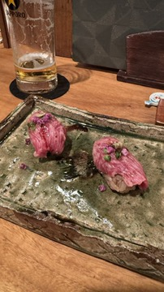
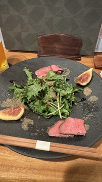
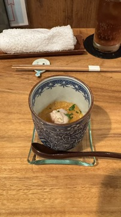
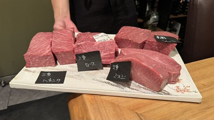

MONTHLY EVENT ― 毎月29日限定
肉会 ― 黒毛和牛を味わう、月に一度の宴。
京都・丸太町の隠れ家、饗応元にて毎月29日限定で開催する「肉会」。店主が厳選した黒毛和牛を、贅沢な一皿一皿でお楽しみいただける特別コースです。





京都・丸太町の隠れ家、饗応元にて毎月29日限定で開催する「肉会」。店主が厳選した黒毛和牛を、贅沢な一皿一皿でお楽しみいただける特別コースです。



